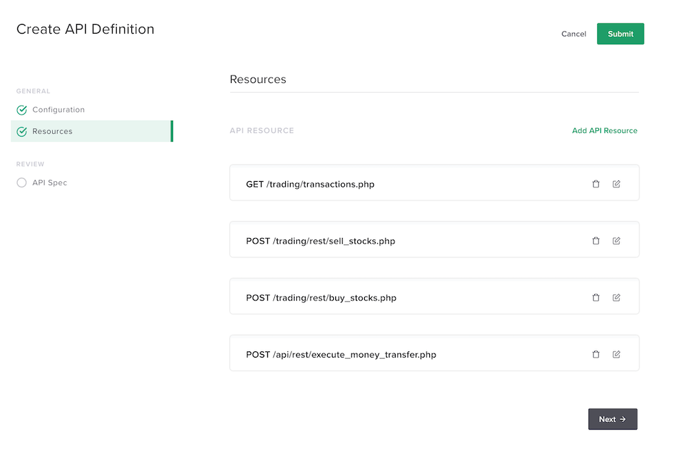
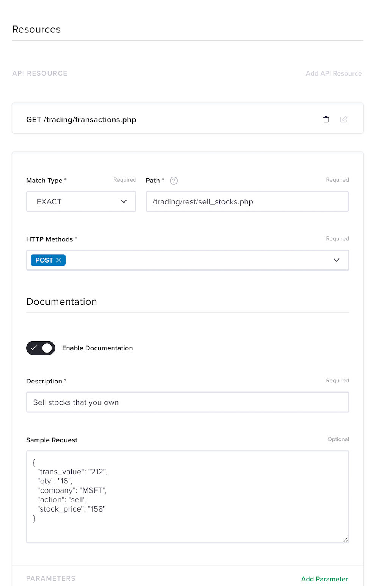
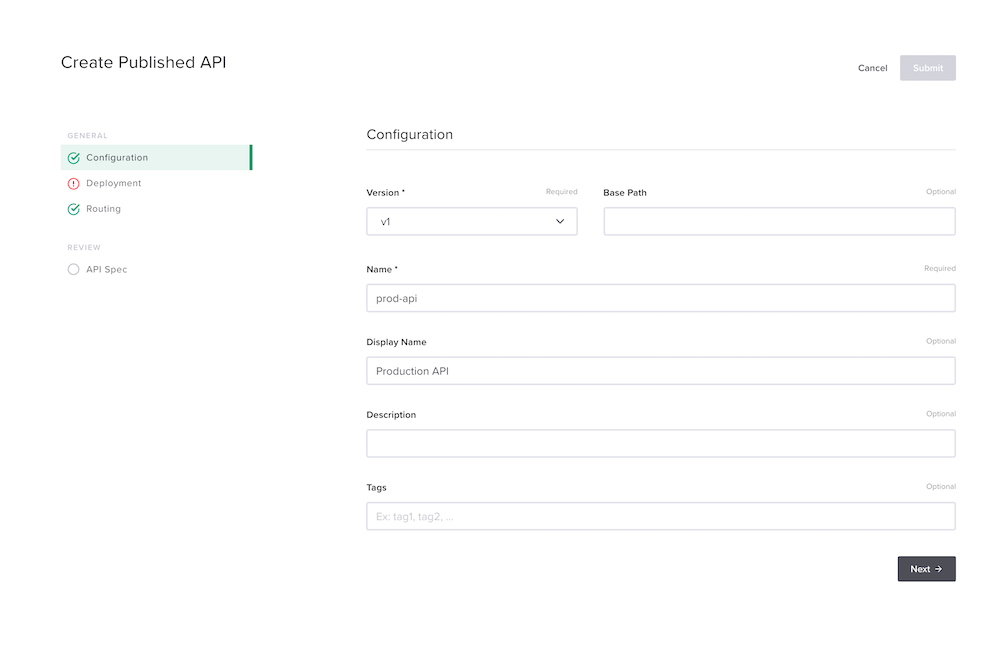
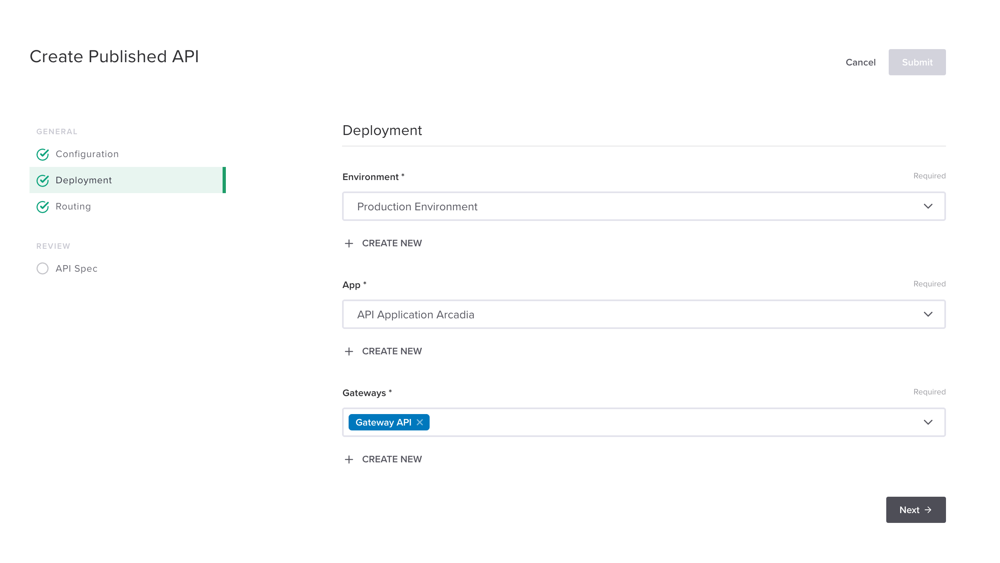
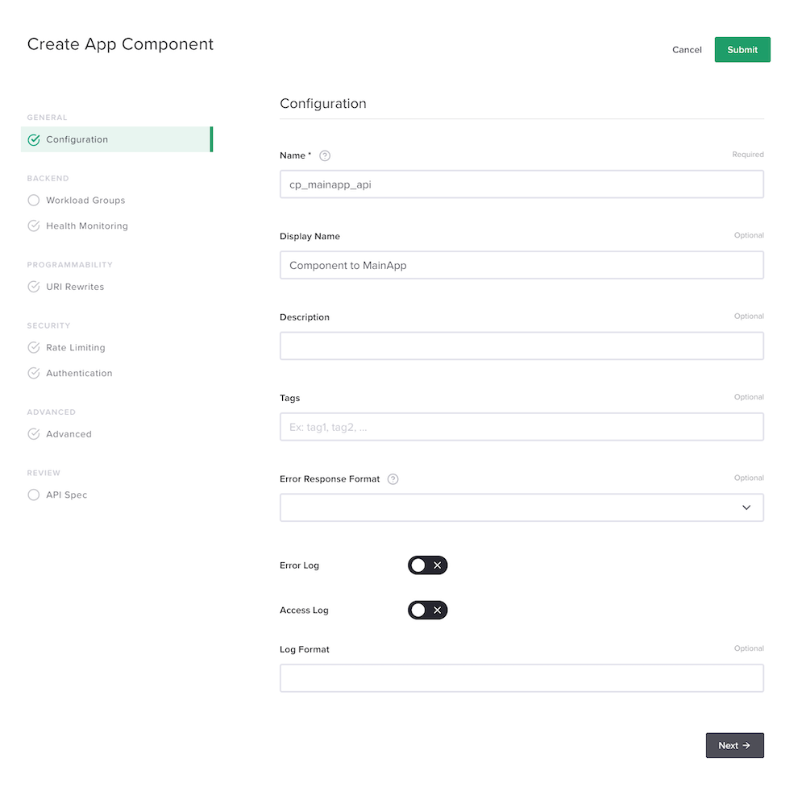
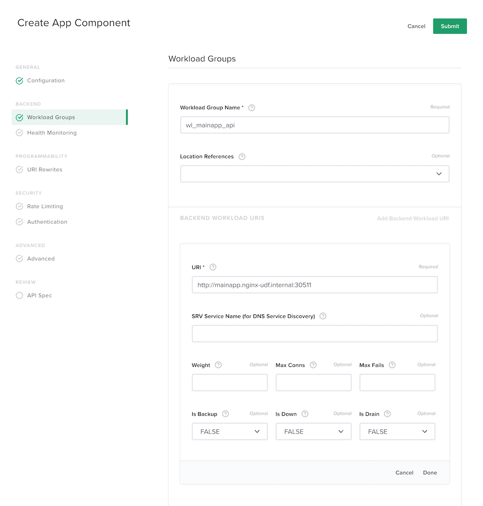
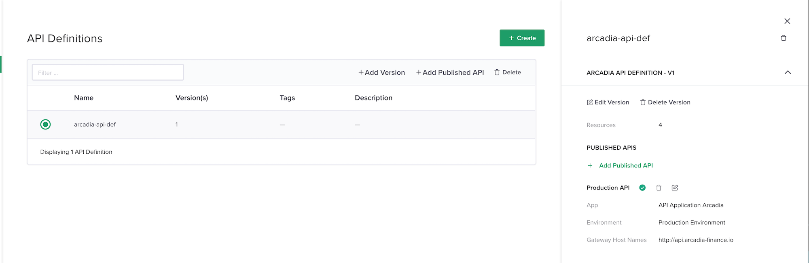

Module 1 - Publish API with OAS3 spec file from the Controller GUI¶
Note
In this section we will push OAS3 specification file into the controller GUI in order to create the API
Connect to Controller GUI via your laptop’s browser or the jumphost
login: admin@nginx-udf.internal
password: admin123!
Step 1 - Create an API Application¶
- Click on top left corner icon, and click on
Apps - Click
Create - Create a new Application
- name :
app_api - display name :
API Application Arcadia - Environment :
Production Environment
- name :
- Click
Summit
Step 2 - Create an API Definition¶
Click on the left menu
APIsClick
Create API DefinitionName :
arcadia-api-defDisplay Name :
Arcadia API DefinitionVersion :
v1Select
OpenAPI specification- and
Copy and paste specification textif you are not connected in the jumphost from here : https://app.swaggerhub.com/apis/F5EMEASSA/json_arcadia/1.0.0-oas3 - or
Import fileif your are connected in the jumphost, the file is located in Downloads folder and its name isarcadia-swagger3.yaml
- and
Click
NextYou can see all the resources have been imported from the
 swagger fileand please open one resource to check its parametersClick
Summit
{kind=link}
{kind=link}
Step 3 - Publish the API¶
Note
At this stage, the API definition is created. So the controller knows the differents URI but doesn’t know yet where to forward the traffic to.
Click on the API definition raw, and on the right frame, click on
+ Add Published APIConfigure the mandatory settings
Name:
prod-apiDisplay Name:
Production API
Click
NextConfigure the
deploymentEnvironment:
Production EnvironmentApp:
API Application ArcadiaGateways:
Gateway API
It is time to configure the
Routing. It is similar to thecomponentsin the WebApp configurationCreate a new component, routing the traffic to the
MainAppClick
 Add Newin theComponents sectionand configure it as belowWarning
Don’t forget to click on
done2 times. Onedonefor the URI and onedonefor the workloadYou can see the workload
Note
We only configure one workload as the API we will test is hosted in the main app K8S service (sell stocks and buy stocks)
Click
Nextuntil the end and clickSubmit
Now, drag and drop the 3 URI starting by
/tradingto the rightComponent MainAppClick
NextandSubmit
{kind=link}
{kind=link}
{kind=link}
{kind=link}
Step 4 - Test your API¶
RDP to the jumphost
login: user
password: user
- Open
Postman - Open up the collection
Arcadia API - Make 2 calls
- Last transactions
- POST Buy Stocks
- Both works and are routed to the
MainApp podin K8S thanks to the NIGNX+ API GW. - You can check in the Web Application in
Chromeif your Buy Stock call passed. It should appear in the last transaction GUI.
{kind=link}
{kind=link}